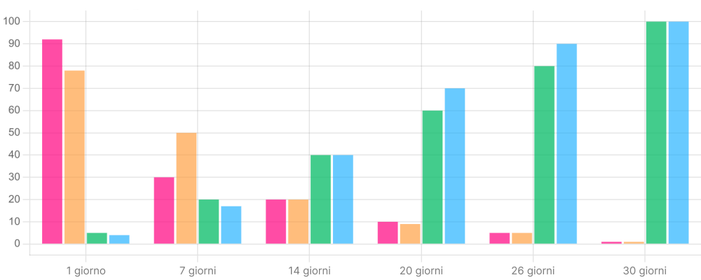
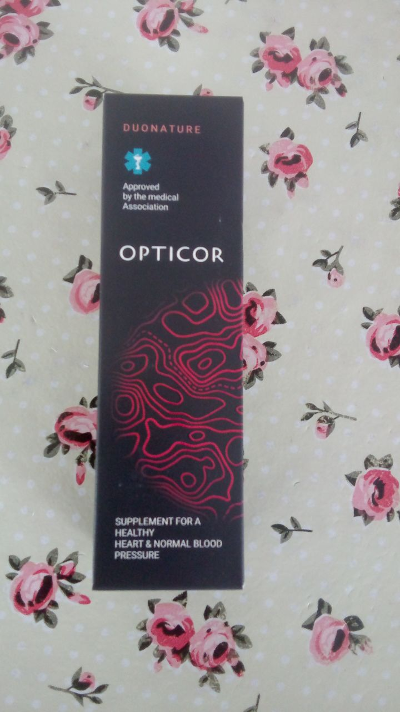
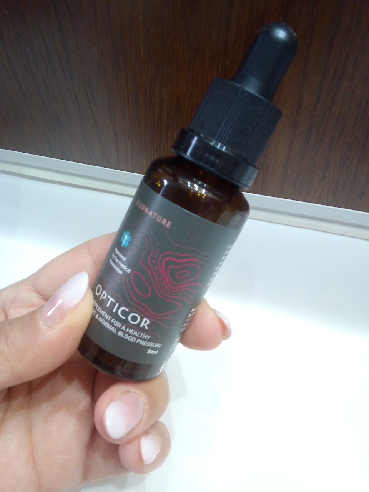
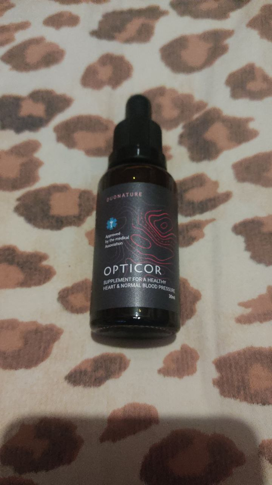

Il , durante le vacanze pasquali in Italia, la celebre attrice e cantante Sophia Loren, conosciuta in tutto il mondo, è stata ricoverata d'urgenza presso il reparto di cardiochirurgia del Policlinico San Donato vicino a Milano, a causa di sintomi di un attacco cardiaco.
Il professor Francesco Calì, il medico curante di Sophia Loren, ha optato per non sottoporre la paziente ad un intervento chirurgico al cuore, data la sua età avanzata e i rischi associati. Al posto dell'intervento, il dottor Calì ha somministrato alla Loren un nuovo farmaco sperimentale, che si ritiene abbia avuto un ruolo cruciale nel salvarle la vita.
In questa occasione, il professor Calì ha voluto sottolineare l'importanza di prestare attenzione alla salute vascolare, soprattutto dopo i 40 anni, evidenziando le statistiche italiane e il numero di decessi legati alle malattie vascolari.
Ultimo aggiornamento: Al , le condizioni di Sophia Loren sono stabili e non destano preoccupazione.
Il ricovero di Sophia Loren, un'icona del cinema mondiale, ha acceso i riflettori sulla questione delle malattie cardiovascolari, portando all'attenzione del pubblico la terribile statistica di mortalità per infarto in Italia dal 2013 al 2023. In questa occasione, è stato inoltre presentato un innovativo farmaco, che secondo i suoi creatori rappresenta attualmente il metodo più sicuro ed efficace per ripristinare e pulire i vasi sanguigni.
Il professor Francesco Calì, medico curante di Sophia Loren, ha avuto un ruolo fondamentale nello sviluppo di questo nuovo farmaco.La sua creazione è frutto della collaborazione di 18 tra i migliori scienziati italiani. Per questo motivo, il dottor Calì ha ribadito la sua fiducia in questo metodo, definendolo completamente sicuro e senza eguali in termini di efficacia. Secondo le sue parole, il farmaco è in grado di ripristinare al 100% la circolazione sanguigna naturale e di riportare i vasi sanguigni allo stato originale, senza l'utilizzo di prodotti chimici o componenti sintetici pericolosi.
Il noto cardiologo italiano parla del trattamento di Sophia Loren
Il dottor Francesco Calì, luminare della cardiologia italiana, ha rilasciato un'intervista esclusiva per approfondire i dettagli del trattamento di Sophia Loren e del metodo rivoluzionario per il ripristino dei vasi sanguigni, efficace non solo nel caso della celebre attrice, ma che ha già donato speranza a migliaia di pazienti.
Il professor Calì vanta una carriera illustre, ricoprendo il ruolo di direttore scientifico presso il rinomato centro di ricerca San Donato e di presidente della Rete Cardiologica Italiana. La sua fama internazionale lo annovera tra i migliori cardiologi al mondo, con oltre 230 pubblicazioni scientifiche alle spalle e una comprovata esperienza nell'applicazione di metodi innovativi per la cura delle malattie cardiovascolari.
Il professor Calì è un forte sostenitore della prevenzione e del mantenimento della salute vascolare. Egli ritiene che attraverso una regolare pulizia dei vasi sanguigni, sia possibile raggiungere una longevità straordinaria, sfiorando addirittura i 100-120 anni.
Con alle spalle oltre 30 anni di dedizione e competenza, il dottor Calì rappresenta un punto di riferimento inestimabile per la salute cardiovascolare.
Prof. Francesco Calì: "Il farmaco sperimentale ha salvato la vita di Sophia Loren" "Al suo arrivo nel nostro reparto, le condizioni di Sophia Loren erano preoccupanti," spiega il professor Calì. "Data la sua età, il suo stato di salute generale e la pregressa storia di malattie cardiache, l'intervento chirurgico rappresentava un rischio troppo elevato. Pertanto, abbiamo optato per un approccio alternativo, scegliendo un farmaco sperimentale di ultima generazione che ha mostrato risultati entusiasmanti nei recenti studi clinici."
Il nuovo farmaco ha dimostrato un'efficacia senza precedenti nel trattamento e nella pulizia dei vasi sanguigni, anche in casi complessi come quello di Sophia Loren," afferma il professor Calì. "In soli tre giorni, le sue condizioni si sono stabilizzate, un risultato sorprendente che nessun altro farmaco ha mai raggiunto prima d'ora. Superando persino le nostre aspettative, Sophia Loren ha oltrepassato la fase critica e ora gode di una condizione stabile. Il completamento del ciclo di trattamento di 30 giorni è ancora in corso, ma sono fiducioso che il suo recupero proseguirà senza intoppi."
"Alla luce di questi risultati eccezionali," conclude il professor Calì, "non abbiamo dubbi che il nuovo farmaco sperimentale rappresentava la scelta terapeutica più vantaggiosa per Sophia Loren. La sua efficacia e rapidità d'azione la rendono una potenziale svolta nel trattamento delle malattie cardiovascolari, offrendo nuova speranza a innumerevoli pazienti."
Un passo avanti epocale con il sostegno del Ministero della Salute:
"Siamo lieti di annunciare che lo sviluppo del nostro farmaco innovativo ha ottenuto il prestigioso supporto del Ministero della Salute italiano," dichiara il professor Calì. "Questo riconoscimento rappresenta un'importante validazione dell'efficacia e del potenziale del nostro trattamento, posizionandolo come strumento di riferimento per la pulizia, la prevenzione e il trattamento delle malattie vascolari."
"La salute del sistema vascolare è il fulcro del nostro benessere," sottolinea il professor Calì.
"È il sistema di trasporto vitale che consegna ossigeno e nutrienti a ogni cellula del corpo. Mantenere vasi sanguigni sani e puliti è fondamentale per una vita lunga e sana."
"L'infarto rappresenta un problema di primaria importanza in Italia," conclude il professor Calì. "È fondamentale che i cittadini non sottovalutino i rischi e le potenziali conseguenze di queste malattie, soprattutto dopo i 40-50 anni. La prevenzione e la consapevolezza sono armi cruciali per contrastare questa crescente epidemia."
"L'intera comunità medica italiana è seriamente preoccupata per l'aumento esponenziale delle malattie vascolari," afferma il professor Calì. "Numerosi luminari del nostro Paese sono impegnati attivamente nello sviluppo di nuove soluzioni terapeutiche e di metodi innovativi per la pulizia dei vasi sanguigni. La nostra priorità è salvaguardare la salute dei cittadini e contrastare la diffusione di queste patologie."
"È imperativo aumentare la consapevolezza in Italia sull'importanza della prevenzione e del trattamento tempestivo delle malattie vascolari," sottolinea il professor Calì. "Invito con urgenza tutte le persone sopra i 40 anni a riflettere attentamente sulla propria salute e a non sottovalutare i rischi. Agire in tempo può fare la differenza."
"L'ostruzione dei vasi sanguigni rappresenta una minaccia seria che, nella maggior parte dei casi (quasi il 100%), porta a esiti drammatici come infarto o ictus," afferma il professor Calì. "Purtroppo, solo in rari casi è possibile salvare i pazienti colpiti da queste gravi patologie."
"Le cause precise di questo preoccupante aumento delle malattie vascolari mortali tra i 40-50enni non sono ancora completamente chiare," spiega il professor Calì. "Tuttavia, è plausibile che lo stile di vita moderno, caratterizzato da cattive abitudini alimentari, stress frequente e peggioramento delle condizioni ambientali, giochi un ruolo determinante."
"Con l'avanzare dell'età, le arterie perdono la loro naturale elasticità e la capacità di auto-pulirsi," spiega il professor Calì. "Questo porta a una riduzione del lume dei vasi sanguigni e a un indebolimento delle loro pareti, rendendole più fragili e soggette a rotture. Aumenta così significativamente il rischio di blocchi completi e formazione di trombi, che a loro volta possono causare una serie di gravi malattie, tra cui infarto, ictus, aterosclerosi, trombosi e altre patologie legate alla cattiva circolazione."
"I dati scientifici dimostrano che a partire dai 40 anni la circolazione sanguigna subisce un calo preoccupante, con una riduzione del 30%," afferma il professor Calì. "Questo declino accelera il deterioramento generale della salute, aumentando la predisposizione a diverse malattie, anche croniche."
"Se non si interviene per contrastare il deterioramento dei vasi sanguigni, la situazione può peggiorare rapidamente," avverte il professor Calì. "I vasi sanguigni svolgono un ruolo fondamentale per la salute di tutto l'organismo. Se si indeboliscono, ne risentono cuore, reni, fegato, polmoni e tutti gli altri organi, che non ricevono più un adeguato apporto di ossigeno e nutrienti."
"Per questo motivo," sottolinea il professor Calì, "è fondamentale effettuare una pulizia completa dei vasi sanguigni almeno ogni 2-3 anni, soprattutto dopo i 40 anni, quando il loro stato diventa più critico. Questa pulizia permette di ripristinare la corretta funzionalità del sistema circolatorio e di prevenire l'insorgere di gravi malattie."
"Sono fiducioso che il nostro nuovo farmaco possa rappresentare un punto di svolta nella lotta contro le malattie cardiovascolari," conclude il professor Calì. "Ha il potenziale per aiutare centinaia di migliaia di cittadini italiani a ripristinare la salute dei loro vasi sanguigni e a vivere una vita più lunga e sana."
"Malattie indirette" che spesso si verificano a causa del deterioramento della circolazione:
- Diabete: La cattiva circolazione aggrava il disturbo del metabolismo del glucosio, creando un circolo vizioso che peggiora ulteriormente la salute dei vasi sanguigni.
- Atrofia cerebrale: Un flusso sanguigno insufficiente al cervello ne provoca l'atrofia, con conseguenti disturbi cognitivi, problemi di memoria e altri sintomi neurologici.
- Cirrosi epatica: Il fegato, privato di un adeguato afflusso di sangue, perde la capacità di filtrare le tossine e processare i nutrienti, favorendo la comparsa della cirrosi.
- Insufficienza renale: I reni, organi deputati all'espulsione delle scorie, necessitano di una buona circolazione per funzionare correttamente. Un flusso sanguigno ridotto porta all'insufficienza renale.
- Glaucoma e deterioramento della vista: La carenza di ossigeno e nutrienti ai tessuti oculari, causata da una scarsa circolazione, aumenta la pressione intraoculare e danneggia il nervo ottico, con conseguenze gravi per la vista, fino al glaucoma.
- Ischemia e ulcere agli arti inferiori: Gambe e piedi ricevono un apporto di sangue insufficiente, favorendo la formazione di ulcere e la necrosi dei tessuti a causa dell'ipossia.

Sintomi da non ignorare
"È fondamentale prestare attenzione ai segnali del corpo che indicano problemi ai vasi sanguigni," sottolinea il professor Calì. "Tra i sintomi più comuni troviamo:
- Affaticamento cronico
- Crampi alle gambe
- Gambe gonfie e pesanti
- Freddo alle estremità
- Intorpidimento e formicolio
- Dolori articolari
- Vertigini e mal di testa
- Visione offuscata
Purtroppo, la medicina moderna spesso non riconosce la cattiva circolazione come causa primaria di queste problematiche, prescrivendo farmaci che trattano solo i sintomi e non la radice del problema."
-->Agire in tempo è fondamentale:
"Intervenire tempestivamente per migliorare la salute dei vasi sanguigni può allungare la vita di 10-15 anni, prevenendo una vasta gamma di malattie e riducendo il rischio di morte prematura," conclude il professor Calì. "È importante non sottovalutare i sintomi e rivolgersi a un medico per una diagnosi e un trattamento adeguati."
"Senza un intervento tempestivo per migliorare la salute dei vasi sanguigni, il rischio di sviluppare gravi malattie aumenta vertiginosamente," avverte il professor Calì. "Non aspettate che la situazione diventi critica come nel caso di Sophia Loren. Agire in anticipo è fondamentale per prevenire attacchi cardiaci, ictus e altre complicazioni potenzialmente mortali."
"Un problema significativo è la scarsa informazione tra i cittadini italiani riguardo ai pericoli di una cattiva circolazione sanguigna," afferma il professor Calì. "È necessario aumentare la consapevolezza su questo tema per incoraggiare le persone a prendersi cura della propria salute vascolare."
"Ricordate," sottolinea il professor Calì, "più velocemente si inizia a ripristinare la circolazione sanguigna, maggiori sono le possibilità di vivere una vita sana, attiva e longeva."
Opticor: una svolta per la cardiologia italiana:
"Il nuovo farmaco Opticor rappresenta una vera e propria svolta nel panorama cardiologico italiano," spiega il professor Calì. "Ha ottenuto il sostegno del Ministero della Salute italiano, non solo per la sua validità e sicurezza, ma anche per la possibilità di offrire programmi agevolati a carico del bilancio statale, rendendolo accessibile a tutti."

"Opticor si distingue da altri prodotti sul mercato per la sua composizione unica e il suo meccanismo d'azione," afferma il professor Calì. "E' un prodotto 100% naturale, a base di estratti vegetali rari, che lo rende efficace e sicuro. Non ha controindicazioni, non richiede prescrizione medica e può essere assunto a qualsiasi età."
"Opticor ha come obiettivo principale la pulizia profonda e la rigenerazione del sistema vascolare," conclude il professor Calì. "Questo porta al miglioramento e alla risoluzione di diverse patologie causate da disturbi circolatori, offrendo una speranza concreta per una vita più sana e longeva."
Opticor: come funziona il rivoluzionario farmaco per la salute vascolare?
"Opticor è il risultato di anni di intenso lavoro da parte dei migliori scienziati del settore," spiega il professor Calì. "Al momento, non ha eguali sul mercato italiano o internazionale, e ha già suscitato grande interesse presso le principali istituzioni mediche di Stati Uniti, Germania, Giappone e Israele. Tuttavia, il nostro obiettivo primario rimane quello di aiutare i cittadini italiani, e al momento non ci sono piani concreti per l'esportazione del farmaco all'estero."
"La caratteristica distintiva di Opticor è la sua composizione unica e 100% naturale," afferma il professor Calì. "Si tratta di una combinazione attentamente selezionata di 27 componenti bioattivi di origine vegetale, una vera e propria "miniera d'oro" per i vasi sanguigni umani. La sua azione è mirata al completo recupero e alla pulizia dei vasi sanguigni, a qualsiasi età."
- Estratto di biancospino: Rinforza le pareti dei vasi, ne migliora l'elasticità, contribuisce alla dissoluzione dei trombi. Ha proprietà anticoagulanti, migliora la circolazione sanguigna grazie al suo effetto fluidificante.
- Estratto di olive: Ricco di minerali come silicio, potassio e calcio, che aiutano a regolare la pressione sanguigna e a sostenere la funzione cardiaca.
- Estratto di luppolo: Contiene monacolina K, che aiuta a ridurre il livello di LDL (colesterolo 'cattivo'), che contribuisce all'ostruzione dei vasi sanguigni.
- Estratto di frutto di kumquat: Estratto di loto indiano: Favorisce il rilassamento dei vasi, riduce la pressione arteriosa ed è noto per la sua capacità di dissolvere il fibrinogeno (componente dei trombi).
- Estratto di foglie di Leonurus: Contiene catechine, che dissolvono il colesterolo accumulato nei vasi, migliorando la circolazione anche nei piccoli capillari.
I principi attivi di Opticor:
L'intera composizione del farmaco può essere consultata qui.
"L'assunzione di “Opticor” ripristina la circolazione sanguigna e il corretto funzionamento degli organi interni," sottolinea il professor Calì. "Grazie a ciò, molte malattie croniche che hanno afflitto le persone per anni possono essere completamente alleviate durante un ciclo di trattamento di 30 giorni."
L'efficacia di Opticor dimostrata da studi clinici:
Ad oggi, “Opticor” ha completato con successo i test e ha ottenuto tutte le certificazioni necessarie, dimostrando un'alta efficacia. I dati clinici sono già stati confermati dai centri di ricerca negli Stati Uniti, in Germania, Israele e Giappone.
"Lo studio su Opticor ha coinvolto 1380 partecipanti di età compresa tra 40 e 75 anni, affetti da diverse patologie vascolari," spiega il professor Calì. "I risultati dei test clinici sono stati eccezionali: il 97,9% dei partecipanti ha registrato un miglioramento significativo dello stato dei vasi sanguigni."
% di deviazione della pressione sanguigna dalla norma
% di partecipanti che provano dolore e debolezza
% miglioramento fisso nel lavoro del cuore e del sistema circolatorio.
% vitalità corporea
"I risultati di questo studio dimostrano chiaramente l'efficacia di Opticor nel migliorare la salute vascolare e il benessere generale," conclude il professor Calì. "Opticor rappresenta una speranza concreta per chi soffre di malattie cardiovascolari o desidera prevenire la loro comparsa."
“Opticor” è adatto per persone di tutte le età, contribuendo all'aumento della durata e al miglioramento della qualità della vita. Questo farmaco è particolarmente utile per gli anziani, migliorando notevolmente la loro salute e benessere.
Risultati concreti in un tempo breve:
"Nella maggior parte dei casi, un ciclo di trattamento di 30 giorni con Opticor è sufficiente per ottenere risultati ottimali," spiega il professor Calì. "Nei casi più complessi, potrebbero essere necessari più cicli. Si consiglia alle persone sopra i 40 anni di effettuare una pulizia dei vasi sanguigni con Opticor ogni 2-3 anni per mantenerne la salute."
Opticor agisce in modo mirato sul sistema vascolare attraverso tre fasi:
- Dissoluzione delle placche di colesterolo e inizio del processo di assorbimento dei trombi: Elimina i depositi dannosi che restringono i vasi sanguigni e riducono il flusso sanguigno.
- Rimozione efficace di depositi di sali e calcio: Previene la calcificazione delle arterie e migliora la loro elasticità.
- Rigenerazione e riparazione delle aree danneggiate delle pareti dei vasi sanguigni: Ripristina l'integrità del sistema vascolare e ne rafforza la funzionalità.
Già durante le prime 1-2 settimane di assunzione di “Opticor”, è possibile notare un miglioramento significativo di diverse problematiche comuni, tra cui:
- Ipertensione arteriosa: Riduzione della pressione sanguigna a livelli normali.
- Varici: Attenuazione delle vene varicose e dei disturbi associati.
- Emorroidi: Diminuzione o scomparsa delle emorroidi e dei sintomi connessi.
- Prostatite: Alleviamento dei sintomi della prostatite e miglioramento della funzione urinaria.
- Disfunzione erettile: Potenziamento della funzione erettile e della libido.
Risultati straordinari dopo un mese
Al termine del ciclo di trattamento mensile con Opticor, si registra un notevole miglioramento della circolazione sanguigna in tutto il corpo, con un incremento fino all'83%. Questo si traduce in una serie di benefici concreti per la salute e il benessere generale, come riportato dai pazienti:
- Miglioramento della memoria: Maggiore concentrazione e capacità di apprendimento.
- Normalizzazione del sonno: Scomparsa di insonnia, risvegli notturni e sensazione di stanchezza al risveglio.
- Eliminazione del ronzio nelle orecchie: Cessazione del fastidioso acufene.
- Scomparsa dei mal di testa: Riduzione significativa o scomparsa di cefalee e emicranie.
- Aumento dei livelli di energia: Maggiore vitalità e resistenza alla fatica.
- Risveglio mattutino più facile: Eliminazione della sonnolenza mattutina e sensazione di riposo fin dalle prime ore del giorno.
La pulizia dell'aorta, ottenuta grazie a Opticor, rafforza notevolmente la forza delle contrazioni cardiache. Questo porta a:
- Riduzione della tachicardia: Nel 94% dei casi, i pazienti non soffrono più di battito cardiaco accelerato.
- Scomparsa dell'ischemia cardiaca: Nel 99% dei casi, si osserva la risoluzione dell'ischemia cardiaca, ovvero la riduzione del flusso sanguigno al cuore.
- Miglioramento della memoria: Maggiore lucidità mentale e capacità cognitive.
- Stabilizzazione del ritmo cardiaco e del polso: Normalizzazione del battito cardiaco e della frequenza pulsatile.
- Riduzione di dolori e disagi nella zona del cuore: Attenuazione o scomparsa di sintomi come angina pectoris e palpitazioni.
- Riduzione significativa del rischio di attacco cardiaco: Minore probabilità di subire infarti grazie al miglioramento della salute cardiovascolare.
Secondo i risultati delle ricerche cliniche, Opticor ha dimostrato un miglioramento della vista nei pazienti che lo hanno assunto. Questo è dovuto al fatto che negli occhi sono presenti numerosi capillari e piccoli vasi sanguigni. L'assunzione regolare di Opticor favorisce:
- Ripristino delle cellule della retina: Miglioramento della sensibilità alla luce e della visione notturna.
- Rafforzamento del tono muscolare degli occhi: Riduzione dell'affaticamento visivo e prevenzione di disturbi come l'astenopia.
Oltre ai benefici già descritti, Opticor offre ulteriori vantaggi per la salute degli occhi:
- Aumento dell'acuità visiva: In media, si osserva un miglioramento della vista di 1-2 diottrie, con una visione più nitida e precisa.
- Stabilizzazione della pressione intraoculare: Riduzione del rischio di glaucoma e altre malattie oculari legate all'ipertensione oculare.
- Riduzione dei sintomi della cataratta: Attenuazione dell'opacità del cristallino e rallentamento della progressione della malattia.
- Rallentamento dei processi degenerativi: Protezione della retina e prevenzione di malattie degenerative come la maculopatia senile.
Opticor ha dimostrato un effetto positivo sulla salute dei reni:
- Miglioramento della funzione renale: Aumento della capacità di filtrare le tossine e regolare il bilancio idroelettrolitico.
- Riduzione del bisogno di diuretici: In alcuni casi, Opticor può ridurre o eliminare la necessità di assumere farmaci diuretici per controllare l'ipertensione o l'edema.
Oltre ai benefici specifici per la circolazione, la vista e i reni, Opticor apporta un miglioramento generale dello stato di salute:
- Scomparsa degli edemi: Riduzione del gonfiore alle gambe e ad altre parti del corpo causato da ritenzione idrica.
- Riduzione del volume addominale: Diminuzione del grasso viscerale e miglioramento della forma fisica.
- Attivazione dei processi di recupero: Favorisce la rigenerazione cellulare e rafforza il sistema immunitario.
- Aumento del tono vitale: Maggiore energia, vitalità e resistenza alla fatica.
La pulizia regolare dei vasi sanguigni con Opticor, come dimostrato dall'esperienza, può:
- Riduce la necessità di farmaci per la pressione alta: In alcuni casi, può portare all'eliminazione completa dei farmaci antipertensivi.
- Controlla l'ipertensione e i "picchi" di pressione: Mantiene la pressione sanguigna entro valori normali e previene picchi improvvisi.
- Migliora lo stato generale di salute: Riduce il rischio di malattie cardiovascolari, ictus e altre patologie correlate all'ipertensione.
Programma di agevolazione per i cittadini italiani

Grazie al supporto del Ministero della Salute italiano, tutti i cittadini italiani di età superiore ai 40 anni possono beneficiare di un programma di agevolazione per ottenere Opticor a un prezzo scontato.
L'iniziativa punta a garantire l'accesso al farmaco a un ampio numero di cittadini italiani, offrendo un sostanzioso sconto del 50% per renderlo più accessibile a prescindere dalla situazione finanziaria individuale. Nell'ambito del programma di agevolazione, è possibile ottenere "Opticor" a un prezzo scontato di 39€ a confezione, rispetto al prezzo normale di 78€.
Per partecipare al programma, è sufficiente inserire il proprio nome e numero di telefono nel modulo ufficiale qui sotto sul sito, assicurando la completa riservatezza dei dati forniti.
Attenzione! La quantità di "Opticor" assegnata dal programma statale di supporto alla popolazione è strettamente limitata.
L'attuale fase del programma di agevolazione "Italia Salutare" è valida dal
al
.
(compreso). Nel contesto di questo programma, ogni residente italiano di età superiore ai 40 anni ha la possibilità di ottenere "Opticor" a costo per 39€.
La consegna di “Opticor” viene effettuata tramite servizi postali e corrieri, garantendo un ricevimento rapido e sicuro in qualsiasi parte d'Italia entro 2-3 giorni.
Commenti:
Paola Segoni Mi dispiace per Sophia Loren. Spero che stia bene! Per quanto riguarda il farmaco, ho comprato Opticor per i miei genitori che soffrivano di ipertensione. È stato incredibilmente efficace! In pochi giorni hanno smesso di assumere le pillole e la loro pressione è tornata alla normalità. Ora mia madre si sente così energica che cura persino il giardino. Vedere i miei genitori così vitali mi fa capire che la salute è davvero inestimabile.
Michael Cassiani Grazie mille per questo programma! Ho ordinato Opticor finché c'è ancora lo sconto.
Luigina Pileri Michael, assicurati di ordinare, io e mio marito abbiamo completato un intero ciclo e ci sentiamo ringiovaniti. Peccato non aver capito prima l'importanza dei vasi sanguigni per la salute generale. Forse puoi ancora ottenerlo con lo sconto, se non è tutto esaurito.

Chiara Romiti Cercavo da tempo un prodotto per migliorare la salute dei vasi sanguigni di mia madre, ma niente di quello che ho provato ha funzionato. Opticor è la nostra ultima speranza. Un medico come il professor Calì merita fiducia, spero davvero che funzioni.
Marco Barbieri Anch'io lo spero. Ho 64 anni e la mia salute sembrava ormai compromessa...
Stefano Marchetti Un mio caro amico ultimamente è pieno di energia e gioia. Gli ho chiesto come stesse facendo e mi ha confessato di assumere Opticor. Ha 69 anni.
Anna Manfrè Grazie al dottor Calì per questa preziosa informazione! Sono riuscita ad ordinare Opticor a un prezzo davvero conveniente. In farmacia non ho trovato farmaci efficaci per i miei vasi sanguigni, ho provato di tutto. Ma Opticor vanta così tante recensioni positive che ho voluto tentare. Spero che funzioni anche per me. Grazie! E un augurio di pronta guarigione a Sophia Loren, una donna davvero straordinaria.
Roli Treichler Ho 72 anni e ho già subito due ictus. I medici mi avevano praticamente abbandonato, sostenendo che fosse solo l'età e che non ci fosse nulla da fare. Ma ho deciso di ordinare Opticor e, dopo due cicli di trattamento, sono rimasto sorpreso dai risultati. Ho ritrovato forza e ora cammino stabilmente ogni giorno. La mia pressione sanguigna è stabile. Un farmaco davvero eccellente.
Tina Leone Avevo ormai accettato la mia ipertensione, la stanchezza costante, la mancanza di forze e i frequenti giramenti di testa. Desideravo trascorrere del tempo con i miei nipoti invece di stare a letto. Ho scoperto per caso il programma di agevolazione e ho ordinato Opticor immediatamente. Il prodotto è stato consegnato dopo 2 giorni. Ho iniziato a sentire i benefici già intorno al 5° giorno. Ora sono al 23° giorno, ne manca solo una settimana, ma mi sento già molto, molto meglio! Grazie mille! Questi medici meritano davvero un grande riconoscimento. Ora il mio stato di salute è nettamente migliorato rispetto a prima. Ho più energia, dormo meglio e mi sento una persona sana! Fortunatamente non ho avuto un infarto come Sophia Loren. Un augurio di pronta guarigione a lei! Sono davvero grata di avere medici così competenti nel nostro paese. Forse è il farmaco più efficace che abbia mai assunto! Lo consiglio vivamente a tutti gli ipertesi. Un farmaco davvero vitale. Grazie!
Monica Neri Pensavo che Sophia Loren non sarebbe più venuta in Italia. Sono contenta che stia bene. Una donna leggendaria!
Elena Galli Monica, ha ancora una sorella in Italia.
Petra Migani Avevo già sentito parlare di questo metodo di pulizia dei vasi sanguigni, ma non l'ho mai provato. È interessante che abbiano creato un programma di agevolazione e sembra che ci tengano davvero a noi. Negli ultimi anni la fiducia nella nostra medicina è quasi completamente svanita.
Paola Gualfetti Avevo un problema di colesterolo e il medico mi aveva prescritto LIVAZO. Ma in una settimana ho avuto così tanti effetti collaterali terribili: i linfonodi si sono infiammati, soprattutto al collo, gonfiandosi a tal punto che non riuscivo a girare la testa. La vista è calata e ho avuto una fastidiosa sensazione agli occhi già dal quarto giorno. Il medico ha spiegato che questi sono effetti collaterali tipici delle statine. Poi mi è stato prescritto CRESTOR, ma ho avuto paura di assumerlo per il timore di ripetere gli effetti collaterali, quindi è rimasto lì. Ora sto pensando di ordinare "Opticor" perché è naturale. Ho capito bene che non ci sono controindicazioni?
Boschi Mirco Ricordo la giovane Sophia Loren come se fosse ieri... Come vola il tempo... Il medico mi aveva prescritto le statine per il colesterolo, ma non c'è stato quasi nessun miglioramento. Ho già ordinato Opticor, perché anch'io credo più nelle erbe che nella chimica. Grazie al dottor Francesco Calì per il suo grande lavoro! Spero davvero che aiuti.
Marcella Antonante Consiglio questo prodotto a tutti! Non pensavo di poter vivere ancora così attivamente! Grazie mille al dottore che ha creato questo farmaco! La mia pressione è normale da un mese e non soffro più di vertigini. Salute a Sophia Loren! Siamo tutti preoccupati per lei.

Stefania Murasecco Soffrivo molto di mal di testa, a tal punto da perdere conoscenza. Ho ordinato queste gocce, le sto assumendo da 3 settimane e non ho più mal di testa né vertigini, mi sento molto bene! Grazie.
Francesca Maso È molto comodo che abbiano creato un programma di agevolazione, la mia pensione è già piccola e penso dieci volte prima di spendere. Un'amica mi ha parlato di Opticor, e sembrava rinata. Sto aspettando il pacco e non ho dubbi che mi aiuterà anche me.
Maria Veneziano Mio Dio, mi dispiace tanto per Sophia Loren... Ma con Opticor ho un'esperienza diretta. Ho un'impressione molto positiva di questo prodotto. Per anni ho sofferto di ipertensione, con svenimenti persino al lavoro, che erano diventati una routine. Qualsiasi cambiamento climatico o stress causava picchi di pressione, seguiti da un'estrema stanchezza. La notte soffrivo di tachicardia. I medici mi hanno avvertito dell'alto rischio di infarto a causa dell'instabilità dei miei vasi sanguigni, il che mi ha spaventato molto, considerando che mio padre è morto per ictus... Ho scoperto Opticor per caso da un articolo e ho deciso di provarlo. Lo assumo da una settimana, ma già sento che la situazione sta migliorando: meno debolezza e picchi di pressione meno frequenti. Mi sento energica e come se fossi ringiovanita. Ho ordinato Opticor anche per mio marito e mio fratello, voglio che anche loro stiano meglio, e ho paura che questo farmaco finisca presto.

Marianna Bianco Oh mio Dio! Pensavo che Sophia Loren ci avesse lasciato. Grazie a Dio ci sono medici competenti! Che fortuna che Sophia Loren sia viva e stia bene! E pensare che grazie al suo caso ora tante persone potranno curare l'ipertensione. Non è un caso che si dica che anche gli eventi negativi possono portare a qualcosa di buono. Grazie mille!
Alessio Terenzi Per fortuna non ho avuto problemi di salute. Ma mia moglie soffre di ipertensione costante. Sta davvero male. È dura quando una persona cara soffre. Abbiamo ricevuto Opticor una settimana fa e mia moglie dice che si sente meglio!
Enzo Paciotti Anche io sono rimasto scioccato quando ho saputo che era in ospedale!
Alberto Antonini Enzo, cosa ti sorprende? Quanti anni ha? È normale che la salute si deteriori con l'età. Ho 64 anni e penso di aver già vissuto abbastanza. Proverò Opticor, ma è difficile avere fiducia nella nostra medicina.
Katia Marino Sophia Loren è la mia attrice preferita! È bellissima a qualsiasi età! Sono felice che sia viva e in via di guarigione. Ordinerò Opticor per mia madre, sono molto ispirata dalle recensioni positive.
Franco Nocentini Mia moglie adorava Sophia Loren. Era la sua attrice preferita. Purtroppo non c'è più, morta per un infarto. Peccato che questo farmaco non sia stato inventato prima. Sembra che si preoccupino solo per i ricchi e non per la gente comune...
Roberta Angelelli Ho ordinato queste capsule, ma la mia pressione non è cambiata.
Aldo Diotallevi Roberta, sei sicura di parlare di Opticor? Non sono capsule, ma gocce! Forse hai confuso un altro prodotto e ora stai disinformando le persone! Io sto assumendo Opticor da una settimana e ho fatto le analisi: il mio colesterolo è quasi nella norma, mentre prima avevo provato di tutto senza risultati. Non diffondere informazioni errate se non sei certa.
Catia Benedetti Che Dio benedica Sophia Loren! Sono molto grata per questo articolo, ho imparato molte cose nuove. Purtroppo non ne sapevo nulla prima. Sono riuscita a ordinare Opticor con il programma di agevolazione e aspetto il mio pacco. Quando arriverà, scriverò i miei risultati. Ogni giorno la mia pressione è a 220 e non ho più la forza di fare nulla. Spero che funzioni anche per me.
Longhitano Vincenza Perché non ci hanno detto prima? Non pensavo che i vasi sanguigni fossero un problema così serio. Pensavo che l'ipertensione fosse solo una questione di età, ma si scopre che può essere curata?
Rosa Maria Leone Voglio raccontare la mia storia. Soffro di ipertensione da circa 2 anni. Ho provato quasi tutti i farmaci da banco... Alcuni non solo non hanno aiutato, ma hanno anche peggiorato le cose! Ad esempio, Bisoprololo e Amlodipina hanno avuto effetti collaterali terribili. Con l'Idroclorotiazide stavo meglio, ma non appena ho smesso di assumerlo, tutto è tornato come prima... Fortunatamente ho trovato il vostro articolo. Non bisogna mai perdere la speranza e ordinerò Opticor ora che c'è lo sconto del 50%. Grazie!
Giorgia Catalano Io e mio marito siamo entrambi ipertesi, il medico ci ha prescritto tanti farmaci, mi sembra che li scegliesse a caso... Idroclorotiazide fa esattamente come hai detto, aiuta ma solo temporaneamente. Abbiamo ordinato Opticor e ora da 3 settimane la nostra pressione è quasi normale! Per la nostra età 140/90 è già straordinario! Grazie mille ai creatori. Anche se all'inizio non ero molto fiduciosa, il farmaco si è rivelato efficace.
Elena Mancini Non credo nei farmaci moderni...
Flavia Mingaroni Sono d'accordo con te. Ma se non proviamo, non lo sapremo mai. Mi interessa la composizione, è la prima volta che vedo qualcosa di naturale per i vasi sanguigni, con così tanti ingredienti interessanti tutti insieme. Anche se anch'io non credo in niente! Ma ho ordinato Opticor per le recensioni. Tra una settimana scriverò se ha funzionato o meno.
Andrea Romano Un infarto è davvero spaventoso! Spero che Sophia Loren si riprenda completamente, anche se alla sua età è sorprendente, è una donna forte! Sono contento che i medici pensino ancora alla gente. Ho ordinato Opticor e scriverò tra poco se non dimentico. Ho gravi problemi di memoria, forse anche a causa dei vasi sanguigni. Dicono che sia così."
Laura Palmucci Un farmaco davvero eccellente. Sono già una settimana senza pressione alta. Quasi incredibile. Dio benedica i creatori."

Novella Leccamuffi Sono scioccata! Povera Sophia Loren... Grazie a Dio si è ripresa!
Sandro Bianchi Voglio condividere la mia esperienza per chi ha ancora dubbi. Opticor mi ha davvero aiutato! L'effetto è sorprendente e l'ho notato molto velocemente. Non so se sia collegato, ma anche il mio sistema digestivo ha iniziato a funzionare meglio. Sto ancora completando il ciclo, ma per un risultato del genere non ho alcun rimpianto. Lo consiglio a tutti i miei conoscenti, soprattutto ora che è disponibile con un programma di agevolazione. Praticamente nessun rischio.
Camilla Costa Ho sofferto di mal di testa per circa 15 anni. La pressione saltava e gli occhi mi facevano male. Sto ancora finendo il ciclo ma già non ho più disturbi e vivo normalmente.
Maria Rosignoli Grazie per questo grande sconto! Ho ordinato subito 4 confezioni!
Loretta Radicioni Ho sentito che Policlinico San Donato è una delle migliori cliniche in Italia. Per fortuna hanno portato Sophia Loren lì per le cure. Altrimenti chissà come sarebbe andata...
Gitte Vedel Nielsen Ho ordinato per mia madre. Non ci crede, dice che è una truffa. Non mi sorprende, è una persona di un'altra generazione. La convincerò a prendere Opticor. Ho fatto molte ricerche e sono quasi certa che sia efficace.
Gabriella Orazi Ho appena ordinato Opticor per 2 cicli, mi hanno detto che domani è l'ultimo giorno del programma di agevolazione e che le scorte stanno per finire. Temo di non poterlo più ordinare in seguito.
Lucio Brunetti Non credo molto in Opticor, ma non ho fiducia neanche nella medicina tradizionale. E poi vendono solo prodotti chimici. Ho deciso di provarlo comunque. La composizione è naturale, quindi non posso perdere nulla.
Paula Pandelea Ho ordinato Opticor per i miei genitori. Aspettiamo la consegna. Entrambi soffrono di ipertensione e fa paura pensare di poterli perdere. Ma così tante persone dicono che aiuta! Se non funzionasse, nessuno scriverebbe, giusto?
Beatrice Marino Per molto tempo ho pensato che fosse necessario pulire i vasi sanguigni, ma non ho trovato nulla con una buona composizione. Opticor sembra affidabile.
Alessandro Paoli Mi è stato consegnato ieri e ho già iniziato a prenderlo. Presto vi racconterò i risultati.
Gianluigi Barcaroli Ricordo Sophia Loren ancora giovane. Spero che la sua salute sia buona. Almeno viene curata dai migliori medici del nostro paese.
Graziella Leocata Le statistiche sono spaventose! Tutto a causa dell'ecologia e dei prodotti nocivi :( Mi sembra che ci avvelenino apposta per farci ammalare. Ho ordinato Opticor per la prevenzione. Non sarà superfluo.
Serena Lombardi Avevo un colesterolo di 6.8, che per me era molto alto. Avevo vertigini costanti, sbalzi di pressione e malessere. Dopo un ciclo, il mio livello è sceso a 3,4. Ma la cosa più importante è il mio benessere! Ora non ho nemmeno bisogno di fare esami. Ho capito la differenza, cosa significa non avere il "sangue grasso", quando la mente è lucida))) Mi dicono che anche il mio modo di parlare è migliorato! Cambiamenti in tutto.
Patrizia Cerquetelli Ero scettica. E lo capisco, ci sono così tante truffe in giro. Ma ho lasciato la mia richiesta, un consulente mi ha richiamato dopo 1 minuto, ha spiegato tutto molto chiaramente, mi ha iscritto al programma di agevolazione e ha scelto il dosaggio specifico per il mio caso. Aspetto il pacco. Grazie mille.
Rita Cretoni Sono entrata per leggere di Sophia Loren e ho visto il familiare Opticor. Un buon prodotto. Viviamo a Milano e nostra nipote ci ha portato in quella clinica dove è ricoverata Sophia Loren. Lì l'atteggiamento è molto buono, non come in altri posti dove sono stata. Lì mi è stato prescritto Opticor, un ciclo di 30 giorni, oggi è il 17esimo giorno ma la pressione non è salita per una settimana!